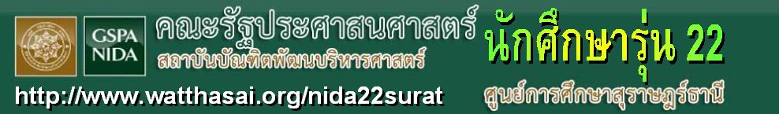
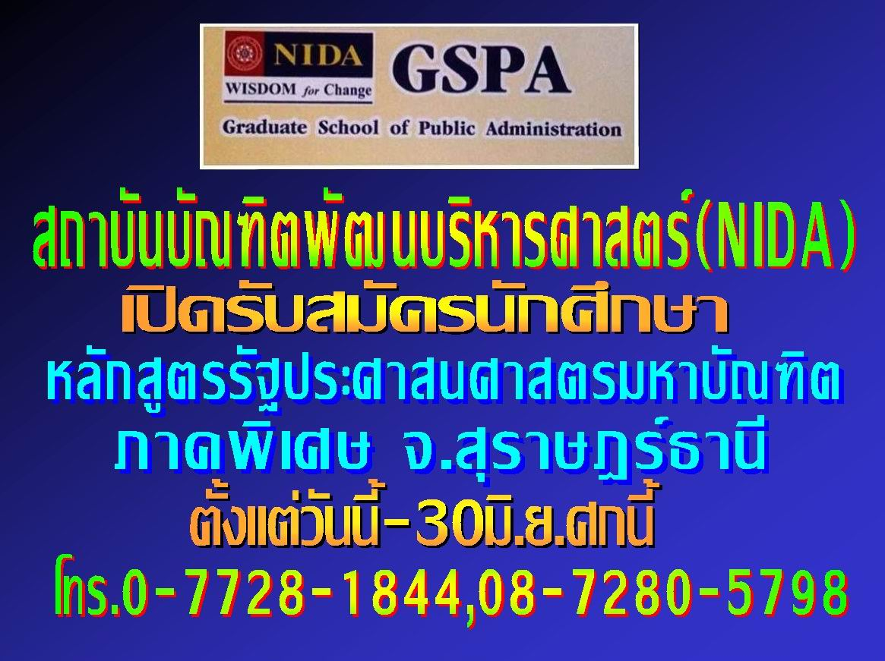

|
 ข้อมูลที่น่าสนใจและน่าติดตามล่าสุด : |
สถิติจำนวนผู้เข้าชม

เริ่มนับ ๒๒ เมษายน ๒๕๕๖ เวลา ๐๘.๓๐ น.
เริ่มนับ ๒๒ เมษายน ๒๕๕๖ เวลา ๐๘.๓๐ น.
เปิดตัวให้บริการข้อมูลแก่สมาชิกเมื่อ
๒ เมษายน ๒๕๕๖ ปรับปรุงครั้งล่าสุดเมื่อ
๒ ธันวาคม ๒๕๕๖ (เวลา ๑๕.๔๖ น.)
Webmaster contact : พระมหาบุญโฮม ปริปุณฺณสีโล E-mail : watthasai@gmail.com
หากต้องการข้อมูลที่เผยแพรต่อสาธารณะ โปรดติดตามดูได้ที่ http://www.watthasai.org เฟชบุ้ค http://www.facebook.com/watthasai
Webmaster contact : พระมหาบุญโฮม ปริปุณฺณสีโล E-mail : watthasai@gmail.com
หากต้องการข้อมูลที่เผยแพรต่อสาธารณะ โปรดติดตามดูได้ที่ http://www.watthasai.org เฟชบุ้ค http://www.facebook.com/watthasai